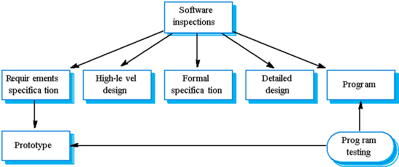

Software Engineering
Verification, Validation, and Accreditation
Course Map
Agenda
- What Are Verification, Validation, and Accreditation?
- V&V Myths Misconceptions
- Verification
- Validation
- Sargent Circle
- High Level VV&A Process
- Criteria for a Successful VV&A
- V&V Techniques
- References
What Are Verification, Validation, and Accreditation?
In the context of computer software, the terms verification, validation, and
accreditation have specific meanings.
- V&V starts with requirements reviews and continues trough
design reviews and code inspections to product testing.
- Three basic approaches
- V&V can be done by the development team
- IV&V (uses third party)
- IV&V can be done concurrently with SW development
- IV&V and VV&A refer to the same fundamental activities, verification and
validation. Both verification and validation are best done by independent
organizations, and usually these activities are followed (when successful)
by accreditation.
- Verification is an activity that determines whether the product of each
phase of the software development cycle meets the requirements made upon it
in each preceding phase, as in the questions "Does the software design
satisfy all elements of the requirements?" or "Does the
implementation accurately reflect the design?"
- Validation is an activity that answers the question, "Is the
software suitable for its intended purpose?" Provided the verification
activity has been properly performed, that question translates roughly to
"Does the software meet its requirements when it's run?"
- Accreditation is a milestone: when it is reached, the accrediting agency
issues a statement that the software product is appropriate for a specified
purpose within a well-defined set of circumstances. Accreditation must be
done by a respected authority in the field if the software's user community
is to have confidence in the software.
It is important that these activities are kept independent of the
development activity and that they are conducted rigorously. This is,
among other reasons, to ensure that the customer's confidence in the software
can remain high.
Verification
Are we building the product right?
- The role of SW verification involves checking that the
SW conforms to its
specification.
- Have the model and simulation been built so
that they fully satisfy the developer’s intent (as indicated in specifications)?
- Verification has two aspects:
- design (all specifications and nothing else are
included in the model or simulation design)
- implementation (all
specifications and nothing else are included in the model or simulation as
built).
Validation
Are we building the right product?
- The aim of validation is to ensure that the SW
system meets the customer's expectations.
- Will the model or simulation be able to
adequately support its intended use?
- Is its fidelity appropriate for that?
- Validation has two aspects:
- conceptual validation (when the anticipated fidelity
of the model or simulation conceptual model is assessed)
- operational validation
(when results from the implemented model or simulation are compared with an appropriate referent to demonstrate that the model or simulation can in fact
support the intended use).
Sargent Circle
- Conceptual model validity is defined as determining that the
theories and assumptions underlying the conceptual model are correct and
that the model representation of the problem entity is “reasonable” for the
intended purpose of the model.
- Computerized model verification is defined as ensuring that the
computer programming and implementation of the conceptual model is correct.
- Operational validity is defined as determining that the model’s
output behavior has sufficient accuracy for the model’s intended purpose
over the domain of the model’s intended applicability.
- Data validity is defined as ensuring that the data necessary for
model building, model evaluation and testing, and conducting the model
experiments to solve the problem are adequate and correct.
- The level of required confidence ("fit for purpose") depends on the
system's purpose (SW functions), the expectations of the system
users, and the current marketing trends (competition, price, quality)
Static and Dynamic V&V
Within the V&V process there are two complementary approaches to the system
checking and analysis:
- System inspections or peer reviews
- SW testing

V&V Planning (V-Model)

Test plans as link between development and testing
The Program Inspection Process
- Find program defects rather than to consider broader design issues
(Fagan, IBM, 1970s).
Roles: author, reader, tester, moderator. The reader reads the code
aloud to the inspection team, the tester inspects the code from testing
perspective and the moderator organizes the process.
- More than 60% of errors in a program can be detected using informal
program inspections (Fagan).
- More formal approach to inspection based on correctness arguments can
detect more than 90% of the errors (Mills et al.).
- One of the most effective uses of reviews is to review the test cases
for a system (Gilb and Graham).
Cleanroom SW Development
- The name is derived from the 'Cleanroom' process in semiconductor
fabrication. The philosophy is defect avoidance rather than defect removal.
- This software development process is based on:
- Incremental development;
- Formal specification;
- Static verification using correctness arguments;
- Statistical testing to determine program reliability.
- Cleanroom process teams
- Specification team. Responsible for developing and maintaining the
system specification.
- Development team. Responsible for developing and verifying the
software. The software is NOT executed or even compiled during this
process.
- Certification team. Responsible for developing a set of statistical
tests to exercise the software after development. Reliability growth
models used to determine when reliability is acceptable.
- However, the process is not widely used. It is not clear how this
approach can be transferred to an environment with less skilled or less
motivated software engineers.
High Level VV&A Process
Criteria for a Successful VV&A
Verification:
- M&S Requirements established and documented
- Successful review of Conceptual Model
- All outstanding Software Change Requests (SCRs) were implemented, tested, and met the requirements for that
version
- All features and feature limitations documented
Validation:
- A Verified M&S
- Verification results and report
- Successful runs of a representative set of scenarios and vignettes
- Reasonable comparison of results to existing legacy data
- Favorable SME (Subject Matter Expert) panel evaluation and review
Accreditation:
- Successful Verification and Validation
- V&V Reports and Analyses and Accreditation Package<
- Meets accreditation requirements for the use intended
V&V Techniques
Informal V&V Techniques
- Tools and approaches rely heavily on human reasoning and subjectivity
- Does not include stringent mathematical formalism
Static V&V Techniques
- Assess the accuracy of the static model design and source code
- Does not require machine execution of the model
- Static “walk-through” of the execution can be done
Dynamic V&V Techniques
- Requires model execution
- Evaluates the model based execution behavior
Formal V&V Techniques (or Formal Methods)
- Based on formal mathematical proofs or correctness
- Most thorough means of model V&V
- Require significant effort - best applied to complex problems
References
- Verification, Validation, and Accreditation of Simulation Models, Robert
G. Sargent, Proceedings of the 2000 Winter Simulation Conference
J. A. Joines, R. R. Barton, K. Kang, and P. A. Fishwick, eds.
- Modeling and
Simulation Verification and Validation Challenges, Dale K. Pace
-
Lewis, Robert O. Independent Verification and Validation: A Life Cycle
Engineering Process for Quality Software. New York: John Wiley & Sons,
Inc., 1992.